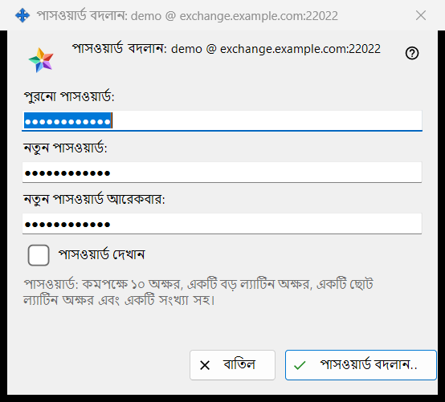
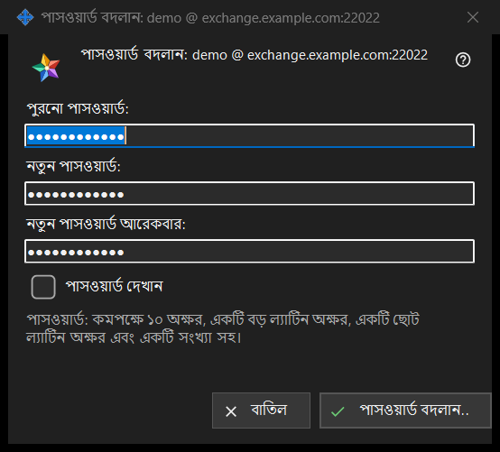

পাসওয়ার্ড বদলান
এটি কীসের জন্য
এই পিসি যে এক্সচেঞ্জ অ্যাকাউন্টে সাইন ইন করা আছে তার পাসওয়ার্ড বদলায়। এটি Share Manager-এর সেটিংসে এক্সচেঞ্জ অ্যাকাউন্ট গ্রুপের পাসওয়ার্ড বদলান.. বোতাম থেকে খোলে; বোতামটি শুধু তখনই দেখা যায় যখন অ্যাকাউন্টটি সংযুক্ত। শিরোনামে অ্যাকাউন্টের নাম লগইন @ সার্ভার আকারে থাকে। উইন্ডো নিজে কিছু পাঠায় না: আপনি যা লিখেছেন তা যাচাই করে ফিরিয়ে দেয়, পাঠায় এই পিসির সংযোগ, আর শেষ কথা সার্ভারের।


এই ক্রমে
- Share Manager-এর সেটিংসে এক্সচেঞ্জ অ্যাকাউন্ট গ্রুপে পাসওয়ার্ড বদলান.. চাপুন।
- পুরনো পাসওয়ার্ড: ফিল্ডে পুরনো পাসওয়ার্ড লিখুন।
- নতুন পাসওয়ার্ড: ফিল্ডে নতুন পাসওয়ার্ড লিখুন এবং নতুন পাসওয়ার্ড আরেকবার: ফিল্ডে তা আবার লিখুন।
- তিনটি ফিল্ড মিলিয়ে দেখতে পাসওয়ার্ড দেখান-এ টিক দিন।
- পাসওয়ার্ড বদলান.. চাপুন; সতর্কতার লাইন এলে ফিল্ডটি ঠিক করে আবার চাপুন।
- গ্রুপে দেখানো উত্তরটি পড়ুন।
উপাদানসমূহ
তিনটি ফিল্ড
পুরনো পাসওয়ার্ড, নতুন পাসওয়ার্ড এবং নতুনটির পুনরাবৃত্তি। তিনটিই আড়াল করা; একটিমাত্র পাসওয়ার্ড দেখান টিক তিনটিকে একসঙ্গে প্রকাশ করে এবং তা মনে রাখা হয় না। উইন্ডো বন্ধ হলে ফিল্ডগুলো খালি করে দেওয়া হয়।
পাসওয়ার্ডের নিয়ম
ফিল্ডগুলোর নিচের লাইনে লেখা আছে: পাসওয়ার্ড: কমপক্ষে ১০ অক্ষর, একটি বড় ল্যাটিন অক্ষর, একটি ছোট ল্যাটিন অক্ষর এবং একটি সংখ্যা সহ। উইন্ডো তখনই তা যাচাই করে, তাই কিছু পাঠানোর আগেই আপনি উত্তর পান।
সতর্কতার লাইন
বোতামটি এই ক্রমে যাচাই করে: পুরনো পাসওয়ার্ড দিন। তারপর: দুটি পাসওয়ার্ড মেলেনি। তারপর নিয়ম: পাসওয়ার্ড ১০ অক্ষরের চেয়ে ছোট। অথবা: পাসওয়ার্ডে বড় ল্যাটিন অক্ষর নেই। অথবা: পাসওয়ার্ডে ছোট ল্যাটিন অক্ষর নেই। অথবা: পাসওয়ার্ডে কোনো সংখ্যা নেই। প্রথম সমস্যাতেই যাচাই থামে, উইন্ডো খোলা থাকে এবং কিছু পাঠানো হয় না।
চাপার পর কী হয়
সঠিক ইনপুটে উইন্ডো বন্ধ হয় এবং গ্রুপ উত্তরটি দেখায়। সফল হলে: পাসওয়ার্ড বদলে গেছে। এই কম্পিউটার কাজ করতেই থাকবে, আর অ্যাকাউন্টের অন্য ডিভাইসগুলোকে আবার সাইন-ইন করতে হবে। অন্য উত্তর: পুরনো পাসওয়ার্ড মেলেনি। / চেষ্টা অনেক বেশি হয়েছে। এক মিনিট অপেক্ষা করে আবার চেষ্টা করুন। / সার্ভার পাসওয়ার্ড বদলানো প্রত্যাখ্যান করেছে। / সার্ভারের সঙ্গে সংযোগ নেই। সংযোগ করে আবার চেষ্টা করুন। সার্ভার দুর্বল পাসওয়ার্ড প্রত্যাখ্যান করলে তার নিজের বাক্যটি দেখানো হয়।
বাতিল ও কিবোর্ডের কী
বাতিল বা Esc উইন্ডো বন্ধ করে, কিছু বদলায় না; Enter পাসওয়ার্ড বদলান.. বোতামটি চাপে।
ম্যানেজার সেটিংস · SFTP শেয়ারিং সেটিংস · এক্সচেঞ্জ সার্ভার সেটিংস